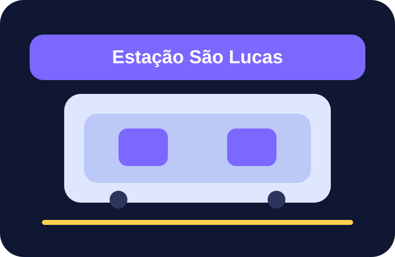

Resumo rápido
Sua missão de hoje
0%
feito
Agora
Saindo de São Lucas

Linha 15-Prata
Entre na estação São Lucas e siga para a viagem até Vila Prudente.
Dica:
Fique atento ao nome da estação e às placas da Linha 15-Prata.